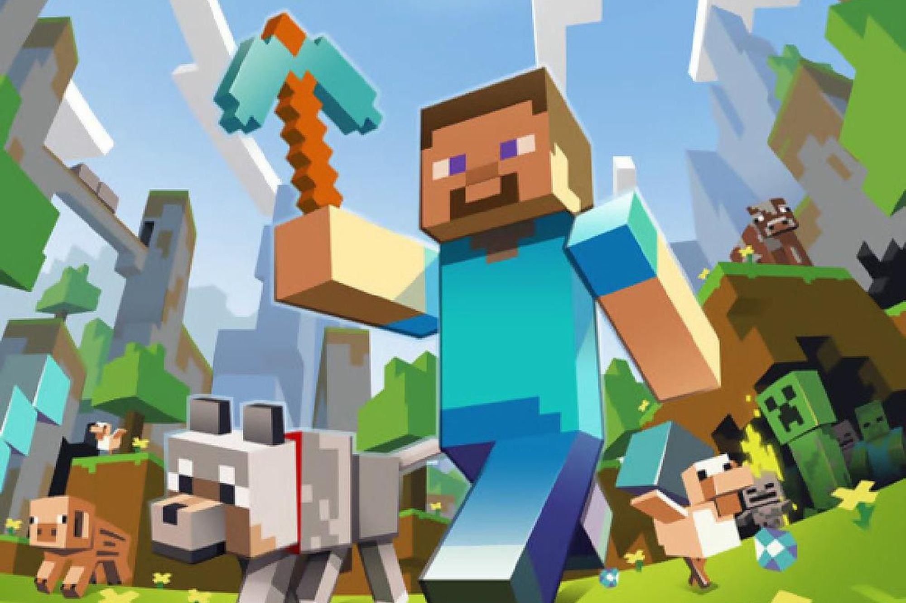
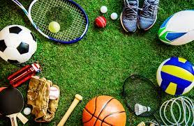

These are 3 of my favorite things.

My favorite video game is minecraft because

Some of my favorite sports are Soccer, Badminton and Basketball. Playing sports is good for your health and body. You can make many friends by playing sports of similar interest. They are fun and competitive
I love spending time with my family and talking with friends. Such as, cooking with my mom, and playing with my siblings.